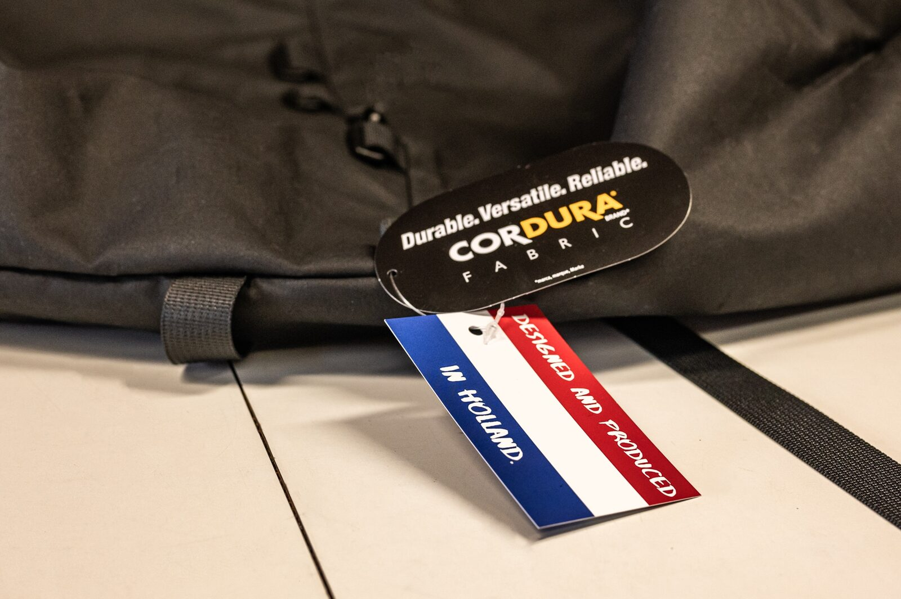

Services

Craftmanship
For over three decades, Radical Design has been a beacon of unwavering craftsmanship and commitment. With a steadfast dedication to the art of creation, we have consistently set the benchmark for excellence in the industry. Our approach is simple yet profound – we meld time-honored craftsmanship with cutting-edge technologies and materials to conceive revolutionary designs that seamlessly blend aesthetics and functionality.
At Radical Design, we hold sustainability as our guiding principle, and this commitment is non-negotiable. Our products are not mere novelties; they are enduring legacies. We stand resolute against fleeting trends and superficial glamour. We are champions of products that withstand the test of time, embodying the essence of longevity.
Our philosophy is clear: we do not embrace gimmicks or engage in transient endeavors. We are not swayed by the allure of short-lived projects or products. Instead, we are champions of the timeless, the enduring, and the everlasting. Each creation bearing the Radical Design mark is a testament to our enduring passion for craftsmanship and our unwavering belief in the enduring value of our work.
Design
Depending on the needs of our clients, we take the initial steps, which starts with the design. It also happens that our clients have already completed the design. After a thorough discussion to understand your ideas, we will present one or more designs to you. Additionally, we will present various materials and techniques that will be an integral part of the final design. Once all these steps are completed, we move on to the next phase, which is the development phase.
Development
After the design phase, we proceed to the development stage. Here, we create the technical drawings and blueprints for the product. Since we are also producers, we have a deep understanding of how to develop a product that is manufacturable. This is an important step in the development as it also helps to keep production as simple as possible which reflects on the production price and the durability.
Prototyping
We operate a workshop located in the Netherlands where we will bring your design concept to life through the prototyping process. Typically, we go through at least two rounds of prototyping, but we're flexible to include additional rounds if needed. The ultimate prototype, often referred to as the "golden production sample," serves as the foundation for manufacturing, which can take place either in the Netherlands or Vietnam. In the event that production shifts to Vietnam, we consistently receive a prototype from their team as part of the process.
Production
In terms of production, we pride ourselves on providing flexibility to cater to your specific needs. Our workshop in the Netherlands is equipped to efficiently produce smaller quantities. For larger orders, we have established partnerships with production facilities in Vietnam, ensuring cost-effective scalability. These facilities specialize in handling higher volumes, and the final prototype sets the benchmark for our production standards.
In addition to our versatile production capabilities, we are excited to introduce our cutting-edge laser cutting machine. This technology enables us to execute precise cutting tasks, especially in materials like hypalon. Whether you require intricate designs or custom specifications, our laser cutting machine ensures accuracy and efficiency in every cut.
Production timelines may vary; our Netherlands facility boasts a short turnaround of as little as 3 months for smaller batches. Meanwhile, orders processed through our Vietnam partners may take approximately 6 months, as we depend on international logistics. Even with production taking place in Vietnam, project management remains centralized in the Netherlands.